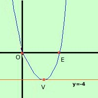

|
Rappresentare graficamente la parabola di equazione y = x2 - 4x 1) Troviamo le coordinate del vertice abbiamo a = 1 b = -4 c = 0 Calcoliamo la coordinata x del vertice: Vx
Calcoliamo la coordinata y del vertice: Vy
V = ( 2; - 4) 2) troviamo l'intersezione con l'asse y Siccome manca il termine noto la parabola interseca l'asse y nell'origine O = (0; 0) 3) troviamo le intersezioni con l'asse x, se esistono Devo fare il sistema fra la parabola e l'equazione dell'asse x (y=0) y = 0 sostituisco y = 0 ottengo le soluzioni calcoli 
Ora devo mettere i punti in un sistema di assi cartesiani e tracciarne la congiungente ricordando che il vertice e' sempre il punto di massimo o di minimo della curva (vuol dire che sul vertice devo fare la conca) |